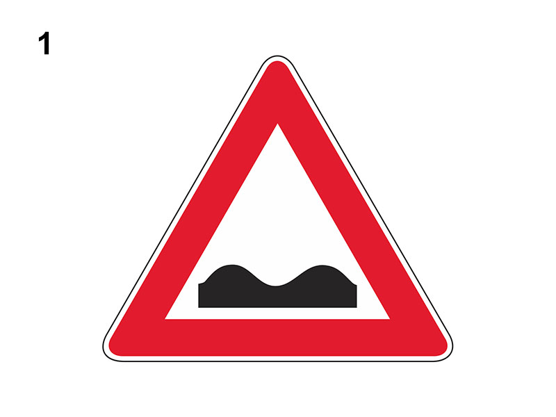

Strada deformata

E' un segnale di pericolo che preannuncia una strada deformata, in cattivo stato, dissestata o con pavimentazione irregolare (di norma a 150 metri).
Può essere integrato con :
Se a fondo giallo, è usato in presenza di cantieri stradali.
In presenza del segnale è necessario:
Da non confondere con il segnale 'DOSSO' o CUNETTA'.
Non è vero che preannuncia una serie di dossi, una cunetta o un tratto con visibilità ridotta.
Non è vero che è obbligatorio circolare al centro della carreggiata o fare attenzione al restringimento della carreggiata.
Può essere integrato con :
- il pannello di 'ESTESA' (che indica l'estensione del tratto)
- il pannello di 'DISTANZA' (che indica tra quanti metri si trova il pericolo)
- un segnale di 'LIMITE MASSIMO DI VELOCITA'
Se a fondo giallo, è usato in presenza di cantieri stradali.
In presenza del segnale è necessario:
- adeguare la velocità in relazione alle particolari condizioni del fondo stradale (specie se si traina un rimorchio) anche per evitare eccessive sollecitazioni e danni alle sospensioni
- prevedere eventuali sbandamenti dei veicoli provenienti dal senso opposto
- tenere saldamente il volante, per controllare possibili sbandamenti
Da non confondere con il segnale 'DOSSO' o CUNETTA'.
Non è vero che preannuncia una serie di dossi, una cunetta o un tratto con visibilità ridotta.
Non è vero che è obbligatorio circolare al centro della carreggiata o fare attenzione al restringimento della carreggiata.